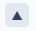
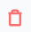

Questa sezione consente di modificare, aggiungere, cancellare e riordinare i reparti tipici dei negozi/supermercati usati da LiSA.
In questa versione, LiSA usa un'unica configurazione reparti valida per tutti i negozi/supermercati. Non e ancora disponibile una configurazione differenziata per singolo punto vendita.
Usare nomi di reparto coerenti con quelli reali aiuta l'intelligenza artificiale ad assegnare i prodotti al reparto piu adatto secondo logiche generali.
Aggiungi: crea un nuovo reparto.

Sposta su: alza il reparto per riordinare la visualizzazione.
Sposta giu: abbassa il reparto nell'ordine.
Matita: modifica la descrizione del reparto.

Cestino: elimina il reparto selezionato.
Se elimini un reparto, tutti i prodotti associati vengono riassegnati automaticamente al reparto figurativo altro. Questo reparto non puo essere modificato o cancellato.
Suggerimento operativo: prima di eliminare un reparto, valuta se e sufficiente rinominarlo o riordinarlo per mantenere piu stabile la classificazione dei prodotti.
La gestione reparti e parte della configurazione generale e dell'area archivi.